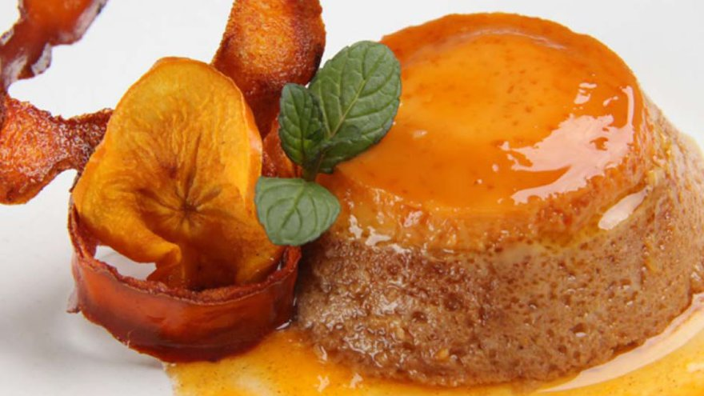

FLAN DE KAKI
Elaboración
Pisar bien la ricotta y agregar la cantidad suficiene de leche como para formar una pasta homogénea.
Cortar los tomates en cubitos, lo mismo la muzzarella. Agregar a la ricotta.
Incorporar las hojas de albahaca cortadas con las manos. Salpimentar a gusto y unir todo.
En una tortera, extender una tapa de masa, colocar encima el preparado anterior, alisando con ayuda de una cuchara.
Batir los huevos, agregar la leche y volcar sobre la preparación.
Cubrir con la otra tapa.
Pinchar la masa con un tenedor y llevar a horno el tiempo suficiente para la cocción de la masa.
Ingredientes
| Cantidades | Ingredientes |
|---|---|
| 4 | huevos ½ taza de azúcar |
| 1 | taza de pulpa de kakis |
| 1 | lata de leche condensada |
| ½ | cdta. de esencia de vainilla |